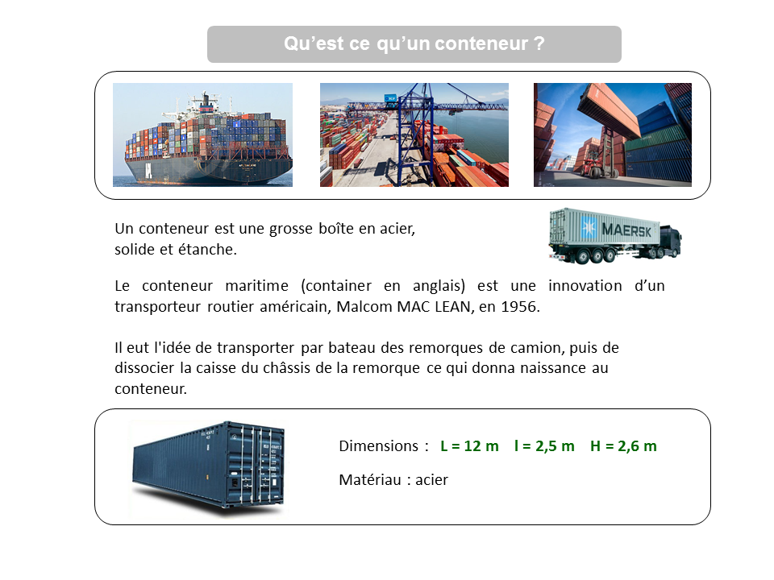
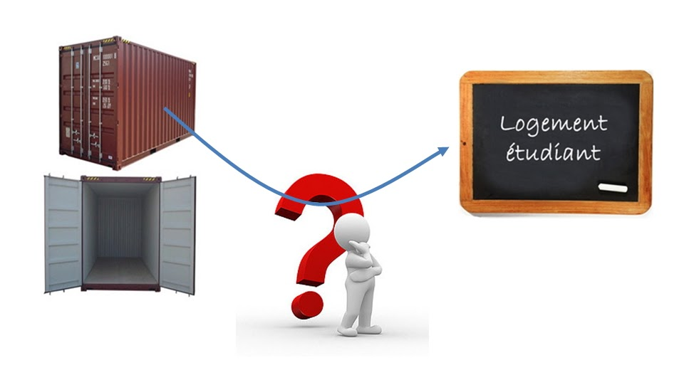
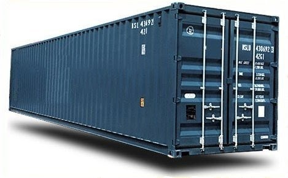
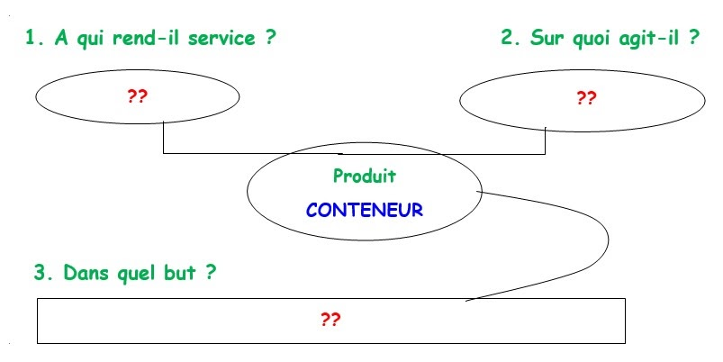
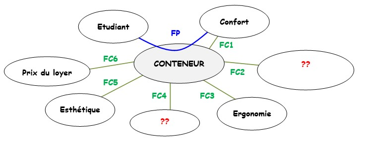
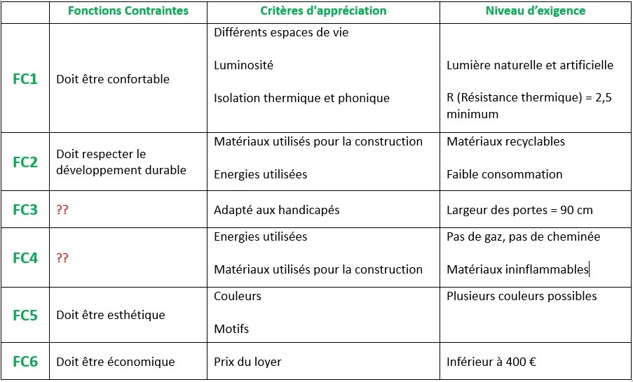
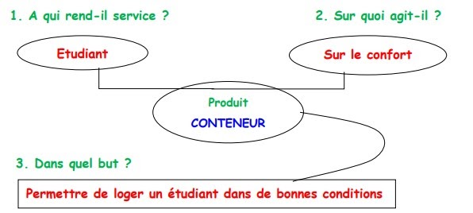
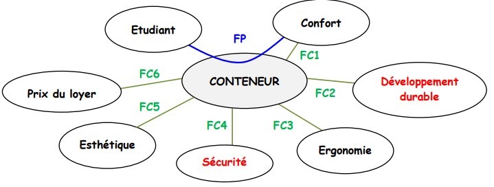
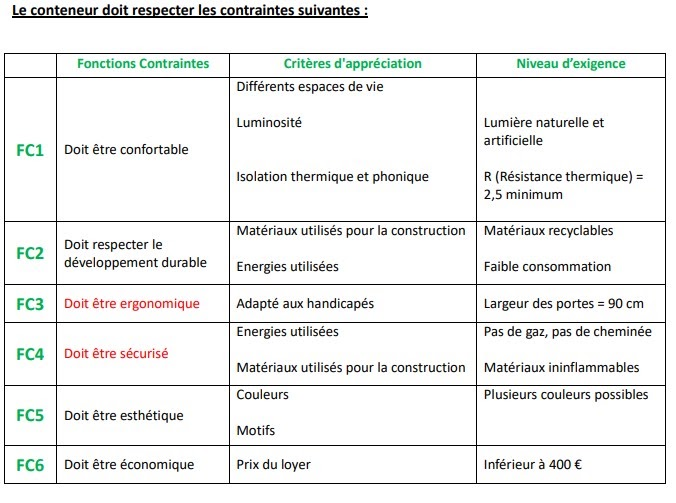

Séance 2: Identifier le cahier des charges
Identifier le cahier des charges
Observer les 2 documents :
Document 1:

Document 2:

Par ilot, vous allez rédiger un texte représentant la situation
Quel est le problème à résoudre ?
Problème retenu
Qui va utiliser le conteneur ? Pourquoi ?
Que faut-il que le conteneur respecte pour vivre dans de bonnes conditions ?
Quelles sont vos hypothèses pour résoudre ce problème ?
Hypothèse retenue
Le conteneur doit permettre à un étudiant de se loger confortablement, à petit prix, doit être sécurisé...
Il doit permettre l'accès aux handicapés.
1. Exprimer le besoin
► Situation de départ (rappel)
Les étudiants rencontrent des difficultés pour se loger : peu de logement, logement inadapté par leur taille, leur aménagement, leur vétusté. Un logement qui leur assure sécurité et confort leur est indispensable.
Dans le cadre du cours de Technologie, notre classe de 5° doit imaginer un logement individuel, de petite taille et à prix raisonnable pour loger un étudiant. Nous allons le concevoir à partir d'un conteneur.
Le conteneur est en acier.
Ses dimensions sont : L = 12 m l = 2,5 m H = 2,6 m

**►**Tracer et compléter l'outil "Bête à cornes" sur votre feuille en répondant aux 3 questions :
1. A qui le conteneur rend-il service ? 2.Sur quoi agit-il ? 3. Dans quel but le concevoir ?

2. La fonction principale et les fonctions contraintes
LA FONCTION PRINCIPALE
La fonction principale (FP) d'un objet technique correspond à sa fonction d'usage.
Elle a été définie précédemment lors de l'expression du besoin.
FP = Le conteneur doit permettre à un étudiant de se loger dans de bonnes conditions.
LES FONCTIONS CONTRAINTES
Pour remplir la fonction principale et répondre correctement au besoin, l'objet technique doit respecter un ensemble d'obligations appelées contraintes.
Pour bien lister les fonctions et les contraintes, on utilise un outil graphique appelé « Pieuvre » :
On place l’objet à réaliser au centre.
On positionne autour l’ensemble des éléments du milieu extérieur en relation avec le conteneur.
On identifie ce que doit faire le conteneur vis à vis des éléments extérieurs en plaçant d'abord la fonction principale FP qui relie 2 éléments extérieurs puis les fonctions contraintes FC.

L'outil « Pieuvre » est complété dans le tableau ci-dessous.
Le conteneur doit respecter les contraintes suivantes :

Tracer et compléter l'outil "Pieuvre" ainsi que le tableau, sur votre feuille.
Correction

Pieuvre:


🧠 Teste tes connaissances
Réponds aux questions puis clique sur « Vérifier » — la correction s'affiche aussitôt.
1. En quel matériau est le conteneur qui servira de base au logement ?
2. Quelles sont les dimensions du conteneur données dans le cahier des charges ?
3. À quoi correspond la fonction principale (FP) d'un objet technique ?
4. Quel outil graphique utilise-t-on pour lister les fonctions et les contraintes de l'objet ?